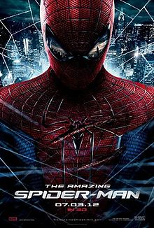

სპაიდერმენი
 ადამიანი ობობა (ინგლ. Spider-Man) — გამოგონილი პერსონაჟი, Marvel Comics-ის გამოცემების გმირი. მისი ავტორები არიან სტენ ლი და სტივ დიტკო. პირველად პერსონაჟი გამოჩნდა ანთოლოგიურ კომიქსში Amazing Fantasy, #15-ში (1962 წლის აგვისტო), სერიაში Silver Age of Comic Books. ლიმ და დიტკომ შექმნეს პერსონაჟი, რომელიც ობოლი იყო და იზრდებოდა დეიდა მეისთან და ძია ბენთან, ხოლო მოზარდობისას ჩვეულ პრობლემებს უმკლავდებოდა, თუმცა, სუპერძალის მიღებასთან ერთად, კრიმინალს ებრძოდა. ადამიანი ობობის შემქმნელებმა პერსონაჟი აღჭურვეს სუპერძალებით, ნებისმიერ ზედაპირზე აცოცვის საშუალებით, ხელზე დამაგრებული მოწყობილობებიდან ობობის ქსელის სროლის საშუალებით და „ობობის ალღოთი“, რომელიც ეხმარება საშიშროების შეგრძნებაში. click linkრთული ბავშვი
 click me
click me